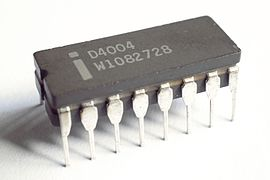

| Home | Products | Fondatori | Contacts |
|---|
intel è un'azienda leader nell'industria dei semiconduttori e della tecnologia dell'informazione, con una lunga storia di innovazione nel settore dei microprocessori e dei circuiti integrati. Fondata nel 1968, Intel è stata all'avanguardia nella progettazione e produzione di CPU per computer e altri dispositivi elettronici. Il marchio "Intel Inside" è diventato un sinonimo di prestazioni e affidabilità nei computer di tutto il mondo. Intel è stata responsabile di diverse innovazioni chiave, tra cui l'introduzione dell'architettura x86, che ha plasmato gran parte dell'informatica moderna.

Nel 1968 Robert Noyce e Gordon Moore lasciano la Fairchild Semiconductor e fondano la Integrated Electronics Corporation, successivamente abbreviata in Intel Corporation. Poco dopo Andrew Grove arriva alla direzione della società. Intel all'inizio produceva componenti per memorie e, durante gli anni settanta, era divenuta leader nella produzione di memorie DRAM, SRAM e ROM. La svolta arrivò nel 1971 quando Marcian Hoff, Federico Faggin, Stanley Mazor e Masatoshi Shima costruirono il primo microprocessore, l'Intel 4004. Nel 1973 l'azienda registrò vendite per 66 milioni di dollari.
 L'azienda ha continuato a guidare lo sviluppo tecnologico con il lancio di diverse generazioni di processori, tra cui la famiglia Core i3, i5, i7 e i9, che offrono prestazioni di alto livello e una maggiore efficienza energetica. Intel è coinvolta anche in altre aree, come la produzione di memorie, unità a stato solido (SSD), schede madri e schede grafiche. Inoltre, Intel è un attore chiave nella ricerca e sviluppo di tecnologie emergenti come l'intelligenza artificiale e il computing quantistico. La sua costante ricerca dell'innovazione e l'impegno per l'eccellenza tecnologica hanno contribuito in modo significativo a plasmare il mondo dell'informatica e a migliorare la vita delle persone in tutto il mondo.
I processori Intel Core i7 sono noti per offrire prestazioni di alto livello grazie a una combinazione di architetture avanzate, frequenze di clock elevate e un numero maggiore di core e thread rispetto ad alcune altre opzioni sul mercato. Questi processori sono progettati per gestire compiti intensivi in modo rapido ed efficiente. La tecnologia Hyper-Threading di Intel consente ai processori Core i7 di gestire più thread contemporaneamente, migliorando notevolmente le prestazioni in situazioni di multitasking. Inoltre, le frequenze di clock elevate e le cache di grandi dimensioni contribuiscono a una maggiore velocità di elaborazione dei dati, il che si traduce in tempi di risposta più veloci e una maggiore fluidità nell'uso quotidiano del computer.
L'azienda ha continuato a guidare lo sviluppo tecnologico con il lancio di diverse generazioni di processori, tra cui la famiglia Core i3, i5, i7 e i9, che offrono prestazioni di alto livello e una maggiore efficienza energetica. Intel è coinvolta anche in altre aree, come la produzione di memorie, unità a stato solido (SSD), schede madri e schede grafiche. Inoltre, Intel è un attore chiave nella ricerca e sviluppo di tecnologie emergenti come l'intelligenza artificiale e il computing quantistico. La sua costante ricerca dell'innovazione e l'impegno per l'eccellenza tecnologica hanno contribuito in modo significativo a plasmare il mondo dell'informatica e a migliorare la vita delle persone in tutto il mondo.
I processori Intel Core i7 sono noti per offrire prestazioni di alto livello grazie a una combinazione di architetture avanzate, frequenze di clock elevate e un numero maggiore di core e thread rispetto ad alcune altre opzioni sul mercato. Questi processori sono progettati per gestire compiti intensivi in modo rapido ed efficiente. La tecnologia Hyper-Threading di Intel consente ai processori Core i7 di gestire più thread contemporaneamente, migliorando notevolmente le prestazioni in situazioni di multitasking. Inoltre, le frequenze di clock elevate e le cache di grandi dimensioni contribuiscono a una maggiore velocità di elaborazione dei dati, il che si traduce in tempi di risposta più veloci e una maggiore fluidità nell'uso quotidiano del computer.
numero di telefono: 02 696 33276
disponibile 24h
Via Lenin, 132, 56017 San Martino PI
Telephone number : 050 86351